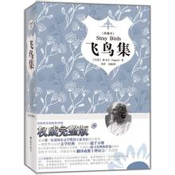

| 书名 | 飞鸟集 |
| 原版名称 | Stray Birds |
| 作者 | 泰戈尔 |
| 类别 | 外国文学、诗歌 |
| 作品收录 | 325首 |
| 字数 | 16154 |
| 出版社 | 中国画报出版社 |
| 出版时间 | 2011/08/01 |
作品简介
《飞鸟集》创作于1913年，是泰戈尔的代表作之一，也是世界上最杰出的诗集之一。这是一部富于哲理的英文格言诗集，共收录诗325首（英文版共326首，中文译版少第263则）。 泰戈尔将白昼和黑夜、溪流和海洋、自由和背叛融入诗中，同时还包括了感情，亲情，友情，无一不展示他对生活的热爱。
精选
- 生如夏花之绚烂，死如秋叶之静美
- 眼睛为她下着雨，心却为她打着伞，这就是爱情
- 如果你因失去了太阳而流泪，那么你也将失去群星了
- 世界以痛吻我，要我报之以歌
- 你看不见你自己，你所看见的只是你的影子
- 错误经不起失败，但是真理却不怕失败
- 不要着急，最好的总会在不经意的时候出现
- 只有经历过地狱般的磨砺，才能练就创造天堂的力量
- 只有流过血的手指，才能弹出世间的绝响
- 友谊与爱情之间的区别在于：友谊意味着两个人和世界，而爱情意味着两个人就是世界
- 你莞尔一笑，对我默默无言，可我觉得，我为此情此境，已经等待长久了
- 不要因为你自己没有胃口而去责备你的食物
作者简介
泰戈尔（RabindranathTagore，1861—1941），印度著名诗人、作家、艺术家和社会活动家。1913年获诺贝尔文学奖。生于加尔各答市的一个富有哲学和文学艺术修养家庭，13岁即能创作长诗和颂歌体诗集。1878年赴英国留学，1880年回国专门从事文学活动。1884至1911年担任梵社秘书，20年代创办国际大学。1941年写作控诉英国殖民统治和相信祖国必将获得独立解放的著名遗言《文明的危机》。泰戈尔是具有巨大世界影响的作家。他共写了50多部诗集，被称为“诗圣”。写了12部中长篇小说，100多篇短篇小说，20多部剧本及大量文学、哲学、政治论著，并创作了1500多幅画，诸写了难以统计的众多歌曲。文、史、哲、艺、政、经范畴几乎无所不包，无所不精。他的作品反映了印度人民在帝国主义和封建种姓制度压迫下要求改变自己命运的强烈愿望，描写了他们不屈不挠的反抗斗争， 充满了鲜明的爱国主义和民主主义精神，同时又富有民族风格和民族特色，具有很高艺术价值，深受人民群众喜爱。